import pandas as pd
# Display all columns
pd.set_option('display.max_columns', None)
# Display all outputs from each cell
from IPython.core.interactiveshell import InteractiveShell
InteractiveShell.ast_node_interactivity = "all"Walkthroughs and Exercises for Machine Learning for Data Analytics with Python
Intro: Getting Started with Machine Learning for Data-Driven Decisions
Walkthrough #1: Setting Up the Python Environment for ML
If you haven’t already installed Python, Jupyter, and the necessary packages, there are instructions on the course repo in the README to do so here.
You can also install the packages directly in a Jupyter notebook with
!pip install pandas seaborn matplotlib scikit-learn mlxtendIf you aren’t able to do this on your machine, you may want to check out Google Colab. It’s a free service that allows you to run Jupyter notebooks in the cloud. Alternatively, I’ve set up some temporary notebooks on Binder here that you can work with online as well.
Run the following code to check that each of the needed packages are installed. If you get an error, you may need to install the package(s) again.
import pandas as pd
import seaborn as sns
import matplotlib.pyplot as plt
import seaborn as sns
from sklearn.model_selection import train_test_split
from sklearn.preprocessing import StandardScaler
from sklearn.linear_model import LinearRegression
from sklearn.metrics import mean_absolute_error, r2_score
from sklearn.ensemble import RandomForestClassifier
from sklearn.metrics import accuracy_score, precision_score, recall_score, confusion_matrix
from sklearn.cluster import KMeans
from sklearn.metrics import silhouette_score
from mlxtend.frequent_patterns import apriori, association_rules
from sklearn.linear_model import LogisticRegression
from sklearn.model_selection import cross_val_score, cross_validate
from sklearn.model_selection import GridSearchCV# Load dataset
telco_churn_raw = pd.read_csv('telco-customer-churn.csv')Exercise #1: Setting Up the Python Environment
By completing this exercise, you will be able to
- Import necessary Python packages
- Check for successful package loading
- Load datasets into Python
Follow the instructions above in Walkthrough #1 to check for correct installation of necessary packages.
# Load dataset
marketing_campaign_raw = pd.read_csv('marketing_campaign.csv')Module 1: Data Understanding and Preprocessing for Machine Learning
Walkthrough #2: Exploring and Preprocessing Data with Pandas & Seaborn
Inspect a dataset using Pandas
# Inspect data structure
telco_churn_raw customerID gender SeniorCitizen Partner Dependents tenure \
0 7590-VHVEG Female 0 Yes No 1
1 5575-GNVDE Male 0 No No 34
2 3668-QPYBK Male 0 No No 2
3 7795-CFOCW Male 0 No No 45
4 9237-HQITU Female 0 No No 2
... ... ... ... ... ... ...
7038 6840-RESVB Male 0 Yes Yes 24
7039 2234-XADUH Female 0 Yes Yes 72
7040 4801-JZAZL Female 0 Yes Yes 11
7041 8361-LTMKD Male 1 Yes No 4
7042 3186-AJIEK Male 0 No No 66
PhoneService MultipleLines InternetService OnlineSecurity \
0 0 No phone service DSL 0
1 1 No DSL 1
2 1 No DSL 1
3 0 No phone service DSL 1
4 1 No Fiber optic 0
... ... ... ... ...
7038 1 Yes DSL 1
7039 1 Yes Fiber optic 0
7040 0 No phone service DSL 1
7041 1 Yes Fiber optic 0
7042 1 No Fiber optic 1
OnlineBackup DeviceProtection TechSupport StreamingTV \
0 1 0 0 0
1 0 1 0 0
2 1 0 0 0
3 0 1 1 0
4 0 0 0 0
... ... ... ... ...
7038 0 1 1 1
7039 1 1 0 1
7040 0 0 0 0
7041 0 0 0 0
7042 0 1 1 1
StreamingMovies Contract PaperlessBilling \
0 0 Month-to-month Yes
1 0 One year No
2 0 Month-to-month Yes
3 0 One year No
4 0 Month-to-month Yes
... ... ... ...
7038 1 One year Yes
7039 1 One year Yes
7040 0 Month-to-month Yes
7041 0 Month-to-month Yes
7042 1 Two year Yes
PaymentMethod MonthlyCharges TotalCharges ServiceCount \
0 Electronic check 29.85 29.85 1
1 Mailed check 56.95 1889.5 3
2 Mailed check 53.85 108.15 3
3 Bank transfer (automatic) 42.30 1840.75 3
4 Electronic check 70.70 151.65 1
... ... ... ... ...
7038 Mailed check 84.80 1990.5 6
7039 Credit card (automatic) 103.20 7362.9 5
7040 Electronic check 29.60 346.45 1
7041 Mailed check 74.40 306.6 1
7042 Bank transfer (automatic) 105.65 6844.5 6
InternetScore AvgServiceUsageScore Churn
0 20 6.651318 No
1 20 12.794164 No
2 20 15.077513 Yes
3 20 17.299583 No
4 40 18.222739 Yes
... ... ... ...
7038 20 24.677222 No
7039 40 24.195642 No
7040 20 NaN No
7041 40 15.461278 Yes
7042 40 33.009487 No
[7043 rows x 24 columns]telco_churn_raw.info()<class 'pandas.core.frame.DataFrame'>
RangeIndex: 7043 entries, 0 to 7042
Data columns (total 24 columns):
# Column Non-Null Count Dtype
--- ------ -------------- -----
0 customerID 7043 non-null object
1 gender 7043 non-null object
2 SeniorCitizen 7043 non-null int64
3 Partner 7043 non-null object
4 Dependents 7043 non-null object
5 tenure 7043 non-null int64
6 PhoneService 7043 non-null int64
7 MultipleLines 7043 non-null object
8 InternetService 7043 non-null object
9 OnlineSecurity 7043 non-null int64
10 OnlineBackup 7043 non-null int64
11 DeviceProtection 7043 non-null int64
12 TechSupport 7043 non-null int64
13 StreamingTV 7043 non-null int64
14 StreamingMovies 7043 non-null int64
15 Contract 7043 non-null object
16 PaperlessBilling 7043 non-null object
17 PaymentMethod 7043 non-null object
18 MonthlyCharges 6621 non-null float64
19 TotalCharges 7043 non-null object
20 ServiceCount 7043 non-null int64
21 InternetScore 7043 non-null int64
22 AvgServiceUsageScore 6424 non-null float64
23 Churn 7043 non-null object
dtypes: float64(2), int64(11), object(11)
memory usage: 1.3+ MB# Check for missing values
telco_churn_raw.isnull().sum()customerID 0
gender 0
SeniorCitizen 0
Partner 0
Dependents 0
tenure 0
PhoneService 0
MultipleLines 0
InternetService 0
OnlineSecurity 0
OnlineBackup 0
DeviceProtection 0
TechSupport 0
StreamingTV 0
StreamingMovies 0
Contract 0
PaperlessBilling 0
PaymentMethod 0
MonthlyCharges 422
TotalCharges 0
ServiceCount 0
InternetScore 0
AvgServiceUsageScore 619
Churn 0
dtype: int64# Check for duplicate rows
telco_churn_raw.duplicated().sum()0Handle missing values and clean data
# Make a copy of the data to fix and clean
telco_churn = telco_churn_raw.copy()
# Handle missing values
telco_churn['MonthlyCharges'] = telco_churn['MonthlyCharges']\
.fillna(telco_churn['MonthlyCharges']\
.median())
telco_churn['AvgServiceUsageScore'] = telco_churn['AvgServiceUsageScore']\
.fillna(telco_churn['AvgServiceUsageScore']\
.median())
telco_churn.info()<class 'pandas.core.frame.DataFrame'>
RangeIndex: 7043 entries, 0 to 7042
Data columns (total 24 columns):
# Column Non-Null Count Dtype
--- ------ -------------- -----
0 customerID 7043 non-null object
1 gender 7043 non-null object
2 SeniorCitizen 7043 non-null int64
3 Partner 7043 non-null object
4 Dependents 7043 non-null object
5 tenure 7043 non-null int64
6 PhoneService 7043 non-null int64
7 MultipleLines 7043 non-null object
8 InternetService 7043 non-null object
9 OnlineSecurity 7043 non-null int64
10 OnlineBackup 7043 non-null int64
11 DeviceProtection 7043 non-null int64
12 TechSupport 7043 non-null int64
13 StreamingTV 7043 non-null int64
14 StreamingMovies 7043 non-null int64
15 Contract 7043 non-null object
16 PaperlessBilling 7043 non-null object
17 PaymentMethod 7043 non-null object
18 MonthlyCharges 7043 non-null float64
19 TotalCharges 7043 non-null object
20 ServiceCount 7043 non-null int64
21 InternetScore 7043 non-null int64
22 AvgServiceUsageScore 7043 non-null float64
23 Churn 7043 non-null object
dtypes: float64(2), int64(11), object(11)
memory usage: 1.3+ MB# Standardize column formats (e.g., convert Yes/No to binary for a few columns)
telco_churn['SeniorCitizen'] = telco_churn['SeniorCitizen'].astype('category')
telco_churn['Churn'] = telco_churn['Churn'].map({'Yes': 1, 'No': 0})# Summarize statistics
telco_churn.describe(include='all') customerID gender SeniorCitizen Partner Dependents tenure \
count 7043 7043 7043.0 7043 7043 7043.000000
unique 7043 2 2.0 2 2 NaN
top 7590-VHVEG Male 0.0 No No NaN
freq 1 3555 5901.0 3641 4933 NaN
mean NaN NaN NaN NaN NaN 32.371149
std NaN NaN NaN NaN NaN 24.559481
min NaN NaN NaN NaN NaN 0.000000
25% NaN NaN NaN NaN NaN 9.000000
50% NaN NaN NaN NaN NaN 29.000000
75% NaN NaN NaN NaN NaN 55.000000
max NaN NaN NaN NaN NaN 72.000000
PhoneService MultipleLines InternetService OnlineSecurity \
count 7043.000000 7043 7043 7043.000000
unique NaN 3 3 NaN
top NaN No Fiber optic NaN
freq NaN 3390 3096 NaN
mean 0.903166 NaN NaN 0.286668
std 0.295752 NaN NaN 0.452237
min 0.000000 NaN NaN 0.000000
25% 1.000000 NaN NaN 0.000000
50% 1.000000 NaN NaN 0.000000
75% 1.000000 NaN NaN 1.000000
max 1.000000 NaN NaN 1.000000
OnlineBackup DeviceProtection TechSupport StreamingTV \
count 7043.000000 7043.000000 7043.000000 7043.000000
unique NaN NaN NaN NaN
top NaN NaN NaN NaN
freq NaN NaN NaN NaN
mean 0.344881 0.343888 0.290217 0.384353
std 0.475363 0.475038 0.453895 0.486477
min 0.000000 0.000000 0.000000 0.000000
25% 0.000000 0.000000 0.000000 0.000000
50% 0.000000 0.000000 0.000000 0.000000
75% 1.000000 1.000000 1.000000 1.000000
max 1.000000 1.000000 1.000000 1.000000
StreamingMovies Contract PaperlessBilling PaymentMethod \
count 7043.000000 7043 7043 7043
unique NaN 3 2 4
top NaN Month-to-month Yes Electronic check
freq NaN 3875 4171 2365
mean 0.387903 NaN NaN NaN
std 0.487307 NaN NaN NaN
min 0.000000 NaN NaN NaN
25% 0.000000 NaN NaN NaN
50% 0.000000 NaN NaN NaN
75% 1.000000 NaN NaN NaN
max 1.000000 NaN NaN NaN
MonthlyCharges TotalCharges ServiceCount InternetScore \
count 7043.000000 7043 7043.000000 7043.000000
unique NaN 6531 NaN NaN
top NaN NaN NaN
freq NaN 11 NaN NaN
mean 65.139287 NaN 2.941076 24.458327
std 29.224436 NaN 1.843899 15.577533
min 18.250000 NaN 0.000000 0.000000
25% 40.650000 NaN 1.000000 20.000000
50% 70.350000 NaN 3.000000 20.000000
75% 89.200000 NaN 4.000000 40.000000
max 118.750000 NaN 7.000000 40.000000
AvgServiceUsageScore Churn
count 7043.000000 7043.000000
unique NaN NaN
top NaN NaN
freq NaN NaN
mean 16.776492 0.265370
std 8.967244 0.441561
min 0.000000 0.000000
25% 10.347048 0.000000
50% 17.647544 0.000000
75% 23.221339 1.000000
max 42.896068 1.000000 Create visualizations to identify key business trends
# Visualize distributions and relationships
plt.clf()
sns.violinplot(data=telco_churn, x='Churn', y='tenure', inner='quartile')
plt.title('Violin Plot of Tenure by Churn')
plt.show();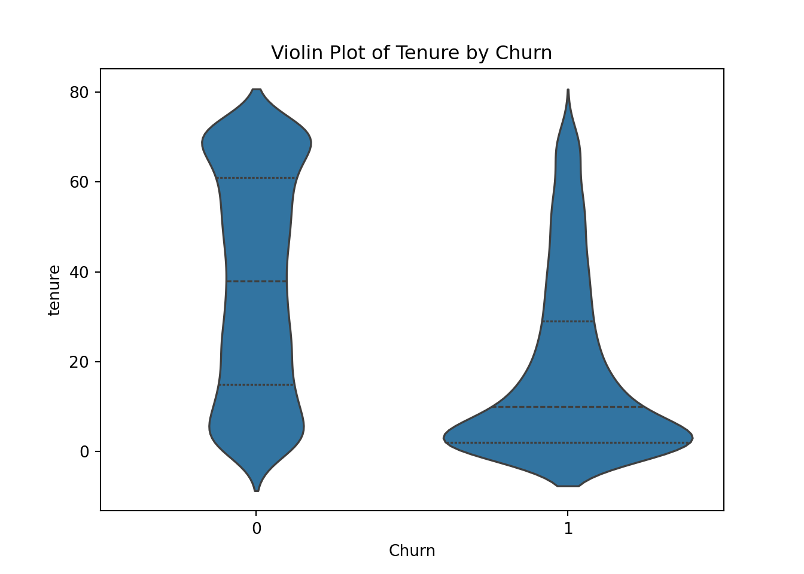
plt.clf()
sns.histplot(data=telco_churn, x='AvgServiceUsageScore')
plt.title('Histogram of Average Service Usage Score')
plt.show();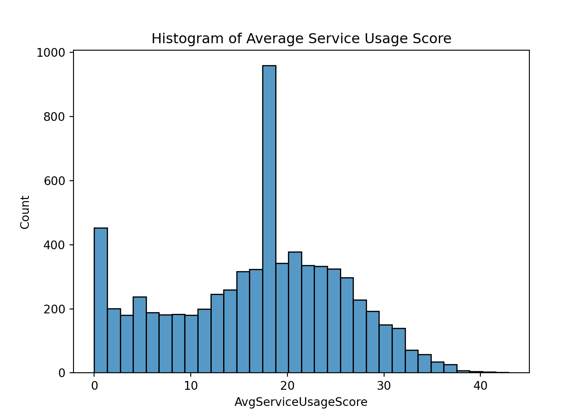
plt.clf()
sns.histplot(data=telco_churn, x='MonthlyCharges')
plt.title('Histogram of Monthly Charges')
plt.show();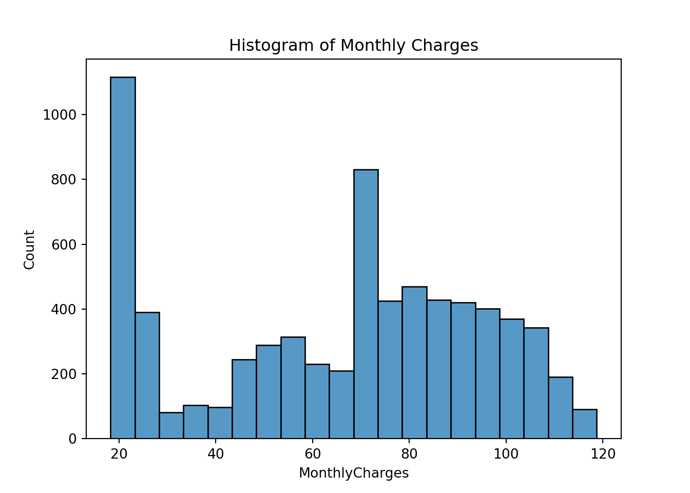
plt.clf()
sns.scatterplot(data=telco_churn, x='AvgServiceUsageScore', y='MonthlyCharges')
plt.title('Average Service Usage Score vs. Monthly Charges')
plt.show();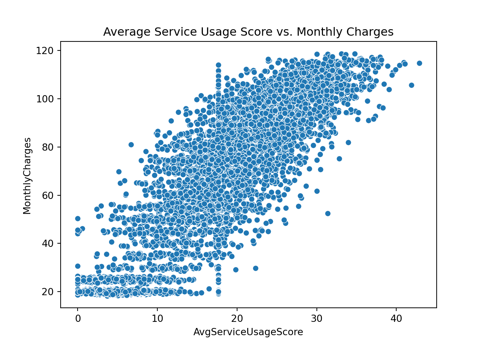
plt.clf()
sns.countplot(data=telco_churn, x='InternetService', hue='Churn')
plt.title('Churn Rate by Internet Service Type')
plt.show();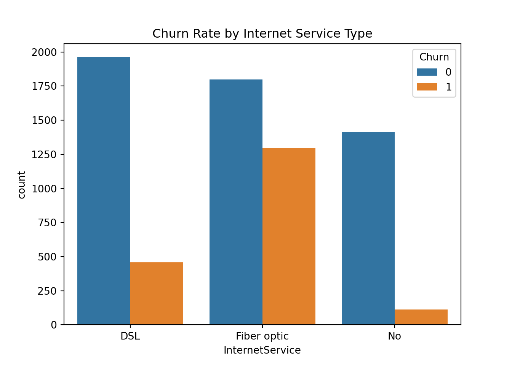
Exercise #2: Exploring and Preprocessing Data with Pandas & Seaborn
Inspect a dataset using Pandas
# Inspect data structure
marketing_campaign_raw Year_Birth Education Marital_Status Income Kidhome Teenhome \
0 1957 Graduation Single 58138.0 0 0
1 1954 Graduation Single 46344.0 1 1
2 1965 Graduation Together 71613.0 0 0
3 1984 Graduation Together 26646.0 1 0
4 1981 PhD Married 58293.0 1 0
... ... ... ... ... ... ...
2235 1967 Graduation Married 61223.0 0 1
2236 1946 PhD Together 64014.0 2 1
2237 1981 Graduation Divorced NaN 0 0
2238 1956 Master Together 69245.0 0 1
2239 1954 PhD Married 52869.0 1 1
Dt_Customer Recency MntWines MntFruits MntMeatProducts \
0 2012-09-04 58 635 88 546
1 2014-03-08 38 11 1 6
2 2013-08-21 26 426 49 127
3 2014-02-10 26 11 4 20
4 2014-01-19 94 173 43 118
... ... ... ... ... ...
2235 2013-06-13 46 709 43 182
2236 2014-06-10 56 406 0 30
2237 2014-01-25 91 908 48 217
2238 2014-01-24 8 428 30 214
2239 2012-10-15 40 84 3 61
MntFishProducts MntSweetProducts MntGoldProds NumDealsPurchases \
0 172 88 88 3
1 2 1 6 2
2 111 21 42 1
3 10 3 5 2
4 46 27 15 5
... ... ... ... ...
2235 42 118 247 2
2236 0 0 8 7
2237 32 12 24 1
2238 80 30 61 2
2239 2 1 21 3
NumWebPurchases NumCatalogPurchases NumStorePurchases \
0 8 10 4
1 1 1 2
2 8 2 10
3 2 0 4
4 5 3 6
... ... ... ...
2235 9 3 4
2236 8 2 5
2237 2 3 13
2238 6 5 10
2239 3 1 4
NumWebVisitsMonth AcceptedCmp3 AcceptedCmp4 AcceptedCmp5 \
0 7 0 0 0
1 5 0 0 0
2 4 0 0 0
3 6 0 0 0
4 5 0 0 0
... ... ... ... ...
2235 5 0 0 0
2236 7 0 0 0
2237 6 0 1 0
2238 3 0 0 0
2239 7 0 0 0
AcceptedCmp1 AcceptedCmp2 Complain Response TotalChildren \
0 0 0 0 1 0
1 0 0 0 0 2
2 0 0 0 0 0
3 0 0 0 0 1
4 0 0 0 0 1
... ... ... ... ... ...
2235 0 0 0 0 1
2236 1 0 0 0 3
2237 0 0 0 0 0
2238 0 0 0 0 1
2239 0 0 0 1 2
TotalSpent
0 1617
1 27
2 776
3 53
4 422
... ...
2235 1341
2236 444
2237 1241
2238 843
2239 172
[2240 rows x 28 columns]marketing_campaign_raw.info()<class 'pandas.core.frame.DataFrame'>
RangeIndex: 2240 entries, 0 to 2239
Data columns (total 28 columns):
# Column Non-Null Count Dtype
--- ------ -------------- -----
0 Year_Birth 2240 non-null int64
1 Education 2240 non-null object
2 Marital_Status 2240 non-null object
3 Income 1994 non-null float64
4 Kidhome 2240 non-null int64
5 Teenhome 2240 non-null int64
6 Dt_Customer 2240 non-null object
7 Recency 2240 non-null int64
8 MntWines 2240 non-null int64
9 MntFruits 2240 non-null int64
10 MntMeatProducts 2240 non-null int64
11 MntFishProducts 2240 non-null int64
12 MntSweetProducts 2240 non-null int64
13 MntGoldProds 2240 non-null int64
14 NumDealsPurchases 2240 non-null int64
15 NumWebPurchases 2240 non-null int64
16 NumCatalogPurchases 2240 non-null int64
17 NumStorePurchases 2240 non-null int64
18 NumWebVisitsMonth 2240 non-null int64
19 AcceptedCmp3 2240 non-null int64
20 AcceptedCmp4 2240 non-null int64
21 AcceptedCmp5 2240 non-null int64
22 AcceptedCmp1 2240 non-null int64
23 AcceptedCmp2 2240 non-null int64
24 Complain 2240 non-null int64
25 Response 2240 non-null int64
26 TotalChildren 2240 non-null int64
27 TotalSpent 2240 non-null int64
dtypes: float64(1), int64(24), object(3)
memory usage: 490.1+ KB# Check for missing values
marketing_campaign_raw.isnull().sum()Year_Birth 0
Education 0
Marital_Status 0
Income 246
Kidhome 0
Teenhome 0
Dt_Customer 0
Recency 0
MntWines 0
MntFruits 0
MntMeatProducts 0
MntFishProducts 0
MntSweetProducts 0
MntGoldProds 0
NumDealsPurchases 0
NumWebPurchases 0
NumCatalogPurchases 0
NumStorePurchases 0
NumWebVisitsMonth 0
AcceptedCmp3 0
AcceptedCmp4 0
AcceptedCmp5 0
AcceptedCmp1 0
AcceptedCmp2 0
Complain 0
Response 0
TotalChildren 0
TotalSpent 0
dtype: int64# Check for duplicate rows
marketing_campaign_raw.duplicated().sum()146Handle missing values and clean data
# Create a clean working copy
marketing_campaign = marketing_campaign_raw.copy()
# Handle missing values of Income
marketing_campaign['Income'] = marketing_campaign['Income']\
.fillna(
marketing_campaign['Income'].median()
)
# Add new features
marketing_campaign["TotalChildren"] = marketing_campaign["Kidhome"] + marketing_campaign["Teenhome"]
marketing_campaign["TotalSpent"] = (
marketing_campaign["MntWines"] + marketing_campaign["MntFruits"] +
marketing_campaign["MntMeatProducts"] + marketing_campaign["MntFishProducts"] +
marketing_campaign["MntSweetProducts"] + marketing_campaign["MntGoldProds"]
)
# Convert to datetime
marketing_campaign["Dt_Customer"] = pd.to_datetime(marketing_campaign["Dt_Customer"], errors='coerce')
marketing_campaign.info()<class 'pandas.core.frame.DataFrame'>
RangeIndex: 2240 entries, 0 to 2239
Data columns (total 28 columns):
# Column Non-Null Count Dtype
--- ------ -------------- -----
0 Year_Birth 2240 non-null int64
1 Education 2240 non-null object
2 Marital_Status 2240 non-null object
3 Income 2240 non-null float64
4 Kidhome 2240 non-null int64
5 Teenhome 2240 non-null int64
6 Dt_Customer 2240 non-null datetime64[ns]
7 Recency 2240 non-null int64
8 MntWines 2240 non-null int64
9 MntFruits 2240 non-null int64
10 MntMeatProducts 2240 non-null int64
11 MntFishProducts 2240 non-null int64
12 MntSweetProducts 2240 non-null int64
13 MntGoldProds 2240 non-null int64
14 NumDealsPurchases 2240 non-null int64
15 NumWebPurchases 2240 non-null int64
16 NumCatalogPurchases 2240 non-null int64
17 NumStorePurchases 2240 non-null int64
18 NumWebVisitsMonth 2240 non-null int64
19 AcceptedCmp3 2240 non-null int64
20 AcceptedCmp4 2240 non-null int64
21 AcceptedCmp5 2240 non-null int64
22 AcceptedCmp1 2240 non-null int64
23 AcceptedCmp2 2240 non-null int64
24 Complain 2240 non-null int64
25 Response 2240 non-null int64
26 TotalChildren 2240 non-null int64
27 TotalSpent 2240 non-null int64
dtypes: datetime64[ns](1), float64(1), int64(24), object(2)
memory usage: 490.1+ KB# Summarize structure
marketing_campaign.describe(include='all')<string>:2: FutureWarning: Treating datetime data as categorical rather than numeric in `.describe` is deprecated and will be removed in a future version of pandas. Specify `datetime_is_numeric=True` to silence this warning and adopt the future behavior now.
Year_Birth Education Marital_Status Income Kidhome \
count 2240.000000 2240 2240 2240.000000 2240.000000
unique NaN 5 8 NaN NaN
top NaN Graduation Married NaN NaN
freq NaN 1127 864 NaN NaN
first NaN NaN NaN NaN NaN
last NaN NaN NaN NaN NaN
mean 1968.805804 NaN NaN 51986.616071 0.444196
std 11.984069 NaN NaN 24229.835690 0.538398
min 1893.000000 NaN NaN 1730.000000 0.000000
25% 1959.000000 NaN NaN 36892.500000 0.000000
50% 1970.000000 NaN NaN 51132.500000 0.000000
75% 1977.000000 NaN NaN 65755.250000 1.000000
max 1996.000000 NaN NaN 666666.000000 2.000000
Teenhome Dt_Customer Recency MntWines \
count 2240.000000 2240 2240.000000 2240.000000
unique NaN 663 NaN NaN
top NaN 2012-08-31 00:00:00 NaN NaN
freq NaN 12 NaN NaN
first NaN 2012-07-30 00:00:00 NaN NaN
last NaN 2014-06-29 00:00:00 NaN NaN
mean 0.506250 NaN 49.109375 303.935714
std 0.544538 NaN 28.962453 336.597393
min 0.000000 NaN 0.000000 0.000000
25% 0.000000 NaN 24.000000 23.750000
50% 0.000000 NaN 49.000000 173.500000
75% 1.000000 NaN 74.000000 504.250000
max 2.000000 NaN 99.000000 1493.000000
MntFruits MntMeatProducts MntFishProducts MntSweetProducts \
count 2240.000000 2240.000000 2240.000000 2240.000000
unique NaN NaN NaN NaN
top NaN NaN NaN NaN
freq NaN NaN NaN NaN
first NaN NaN NaN NaN
last NaN NaN NaN NaN
mean 26.302232 166.950000 37.525446 27.062946
std 39.773434 225.715373 54.628979 41.280498
min 0.000000 0.000000 0.000000 0.000000
25% 1.000000 16.000000 3.000000 1.000000
50% 8.000000 67.000000 12.000000 8.000000
75% 33.000000 232.000000 50.000000 33.000000
max 199.000000 1725.000000 259.000000 263.000000
MntGoldProds NumDealsPurchases NumWebPurchases NumCatalogPurchases \
count 2240.000000 2240.000000 2240.000000 2240.000000
unique NaN NaN NaN NaN
top NaN NaN NaN NaN
freq NaN NaN NaN NaN
first NaN NaN NaN NaN
last NaN NaN NaN NaN
mean 44.021875 2.325000 4.084821 2.662054
std 52.167439 1.932238 2.778714 2.923101
min 0.000000 0.000000 0.000000 0.000000
25% 9.000000 1.000000 2.000000 0.000000
50% 24.000000 2.000000 4.000000 2.000000
75% 56.000000 3.000000 6.000000 4.000000
max 362.000000 15.000000 27.000000 28.000000
NumStorePurchases NumWebVisitsMonth AcceptedCmp3 AcceptedCmp4 \
count 2240.000000 2240.000000 2240.000000 2240.000000
unique NaN NaN NaN NaN
top NaN NaN NaN NaN
freq NaN NaN NaN NaN
first NaN NaN NaN NaN
last NaN NaN NaN NaN
mean 5.790179 5.316518 0.072768 0.074554
std 3.250958 2.426645 0.259813 0.262728
min 0.000000 0.000000 0.000000 0.000000
25% 3.000000 3.000000 0.000000 0.000000
50% 5.000000 6.000000 0.000000 0.000000
75% 8.000000 7.000000 0.000000 0.000000
max 13.000000 20.000000 1.000000 1.000000
AcceptedCmp5 AcceptedCmp1 AcceptedCmp2 Complain Response \
count 2240.000000 2240.000000 2240.000000 2240.000000 2240.000000
unique NaN NaN NaN NaN NaN
top NaN NaN NaN NaN NaN
freq NaN NaN NaN NaN NaN
first NaN NaN NaN NaN NaN
last NaN NaN NaN NaN NaN
mean 0.072768 0.064286 0.013393 0.009375 0.149107
std 0.259813 0.245316 0.114976 0.096391 0.356274
min 0.000000 0.000000 0.000000 0.000000 0.000000
25% 0.000000 0.000000 0.000000 0.000000 0.000000
50% 0.000000 0.000000 0.000000 0.000000 0.000000
75% 0.000000 0.000000 0.000000 0.000000 0.000000
max 1.000000 1.000000 1.000000 1.000000 1.000000
TotalChildren TotalSpent
count 2240.000000 2240.000000
unique NaN NaN
top NaN NaN
freq NaN NaN
first NaN NaN
last NaN NaN
mean 0.950446 605.798214
std 0.751803 602.249288
min 0.000000 5.000000
25% 0.000000 68.750000
50% 1.000000 396.000000
75% 1.000000 1045.500000
max 3.000000 2525.000000 Create visualizations to identify key business trends
plt.close('all')
plt.clf()
sns.violinplot(data=marketing_campaign, x='Response', y='Income', inner='quartile')
plt.title('Violin Plot of Income by Campaign Response')
plt.show();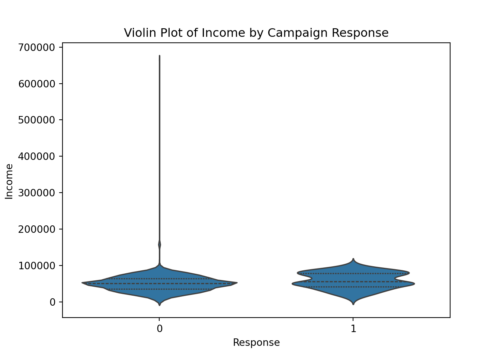
plt.close('all')
plt.clf()
sns.histplot(data=marketing_campaign, x='TotalSpent')
plt.title('Histogram of Total Spent')
plt.show();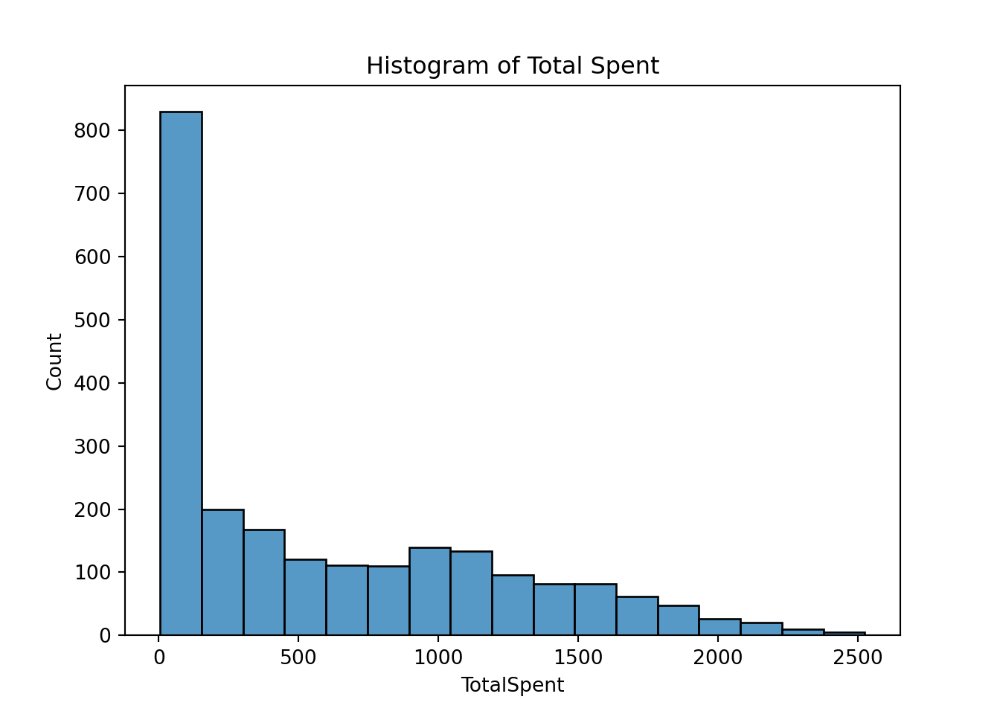
plt.close('all')
plt.clf()
sns.scatterplot(data=marketing_campaign, x='Income', y='TotalSpent', hue='Response', alpha=0.7)
plt.title('Income vs. Total Spent by Campaign Response')
plt.show();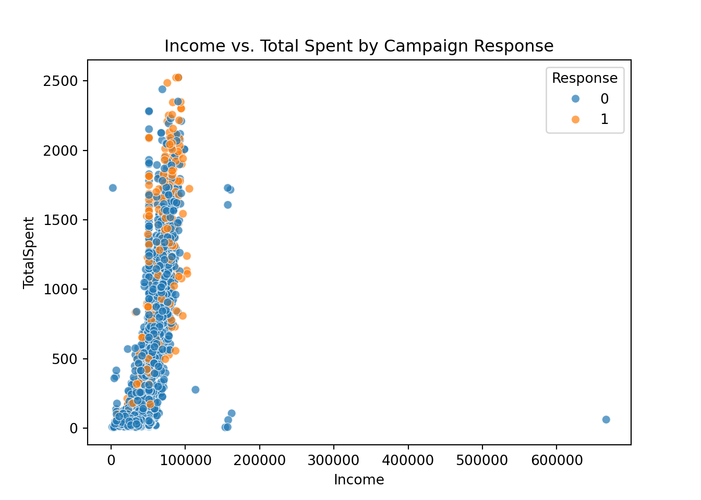
plt.close('all')
plt.clf()
sns.countplot(data=marketing_campaign, x='Education', hue='Response')
plt.title('Campaign Response by Education Level')
#plt.xticks(rotation=30)
plt.show();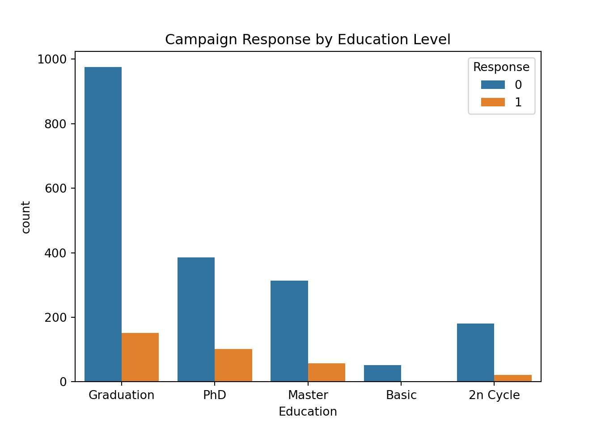
Module 2: Supervised Learning for Business Decisions
Walkthrough #3: Build a Regression Model for Pricing Optimization
Split the data into training and validation sets
X = telco_churn[['AvgServiceUsageScore']] # predictor
y = telco_churn['MonthlyCharges'] # target
# Best practice when working with linear models
scaler = StandardScaler()
X_scaled = scaler.fit_transform(X)
X_train, X_val, y_train, y_val = train_test_split(
X_scaled, y, test_size=0.2, random_state=2025
)Train a linear regression model
lr = LinearRegression()
lr.fit(X_train, y_train)LinearRegression()In a Jupyter environment, please rerun this cell to show the HTML representation or trust the notebook.
On GitHub, the HTML representation is unable to render, please try loading this page with nbviewer.org.
LinearRegression()
print(f"Intercept: {lr.intercept_:.2f}")Intercept: 64.88print(f"Coefficient (usage_scaled → price): {lr.coef_[0]:.2f}")Coefficient (usage_scaled → price): 25.85Evaluate model performance on the validation set
y_pred = lr.predict(X_val)
r2 = r2_score(y_val, y_pred)
mae = mean_absolute_error(y_val, y_pred)
print(f"R-squared: {r2:.2f}")R-squared: 0.80print(f"Mean Absolute Error: {mae:.2f}")Mean Absolute Error: 8.25Exercise #3: Build a Regression Model for Pricing Optimization
Split the data into training and validation sets
# Predictor and target
X_m = marketing_campaign[['Income']] # predictor
y_m = marketing_campaign['TotalSpent'] # target
y_m = y_m.reset_index(drop=True)
# Standardize the predictor
scaler_m = StandardScaler()
X_m_scaled = scaler_m.fit_transform(X_m)
# Train-test split
X_m_train, X_m_val, y_m_train, y_m_val = train_test_split(
X_m_scaled, y_m, test_size=0.2, random_state=2025
)Train a linear regression model
lr_m = LinearRegression()
lr_m.fit(X_m_train, y_m_train)LinearRegression()In a Jupyter environment, please rerun this cell to show the HTML representation or trust the notebook.
On GitHub, the HTML representation is unable to render, please try loading this page with nbviewer.org.
LinearRegression()
print(f"Intercept: {lr_m.intercept_:.2f}")Intercept: 610.82print(f"Coefficient (Income_scaled → TotalSpent): {lr_m.coef_[0]:.2f}")Coefficient (Income_scaled → TotalSpent): 349.61Evaluate model performance on the validation set
y_m_pred = lr_m.predict(X_m_val)
r2_m = r2_score(y_m_val, y_m_pred)
mae_m = mean_absolute_error(y_m_val, y_m_pred)
print(f"R-squared: {r2_m:.2f}")R-squared: 0.48print(f"Mean Absolute Error: {mae_m:.2f}")Mean Absolute Error: 323.76Walkthrough #4: Implement a Classification Model for Customer Churn
Split the data into training and validation sets
# Select relevant features
features = ['tenure', 'SeniorCitizen', 'ServiceCount', 'InternetScore', 'AvgServiceUsageScore']
X = telco_churn[features]
y = telco_churn['Churn']
# Scaling is not as important for tree-based models since they are not sensitive to
# one feature having a larger scale than another
# Train-test split
X_train, X_test, y_train, y_test = train_test_split(X, y, test_size=0.2, random_state=2025)Train a Random Forest classification model
# Train Random Forest classifier
clf = RandomForestClassifier(n_estimators=100, random_state=2025)
clf.fit(X_train, y_train)RandomForestClassifier(random_state=2025)In a Jupyter environment, please rerun this cell to show the HTML representation or trust the notebook.
On GitHub, the HTML representation is unable to render, please try loading this page with nbviewer.org.
RandomForestClassifier(random_state=2025)
Evaluate model performance on the validation set
y_pred = clf.predict(X_test)
print(f"Accuracy: {accuracy_score(y_test, y_pred):.2f}")Accuracy: 0.76print(f"Precision: {precision_score(y_test, y_pred):.2f}")Precision: 0.53print(f"Recall: {recall_score(y_test, y_pred):.2f}")Recall: 0.48cm = confusion_matrix(y_test, y_pred)
labels = ['No Churn', 'Churn']
cm_telco_churn = pd.DataFrame(cm, index=labels, columns=labels)
print("\nConfusion Matrix (formatted):")
Confusion Matrix (formatted):print(cm_telco_churn) No Churn Churn
No Churn 904 149
Churn 185 171Exercise #4: Implement a Classification Model for Customer Churn
Split the data into training and validation sets
# Select relevant features
features_m = ['Income', 'TotalSpent', 'TotalChildren']
X_m_class = marketing_campaign[features_m]
y_m_class = marketing_campaign['Response']
# Split into training and validation sets
X_m_train_class, X_m_val_class, y_m_train_class, y_m_val_class = train_test_split(
X_m_class, y_m_class, test_size=0.2, random_state=2025
)Train a Random Forest classification model
# Train Random Forest classifier
clf_m = RandomForestClassifier(n_estimators=100, random_state=2025)
clf_m.fit(X_m_train_class, y_m_train_class)RandomForestClassifier(random_state=2025)In a Jupyter environment, please rerun this cell to show the HTML representation or trust the notebook.
On GitHub, the HTML representation is unable to render, please try loading this page with nbviewer.org.
RandomForestClassifier(random_state=2025)
Evaluate model performance on the validation set
y_m_pred_class = clf_m.predict(X_m_val_class)
print(f"Accuracy: {accuracy_score(y_m_val_class, y_m_pred_class):.2f}")Accuracy: 0.84print(f"Precision: {precision_score(y_m_val_class, y_m_pred_class):.2f}")Precision: 0.27print(f"Recall: {recall_score(y_m_val_class, y_m_pred_class):.2f}")Recall: 0.20labels = ['No Response', 'Response']
cm_marketing_response = pd.DataFrame(confusion_matrix(y_m_val_class, y_m_pred_class),
index=labels, columns=labels)
print("\nConfusion Matrix (formatted):")
Confusion Matrix (formatted):print(cm_marketing_response) No Response Response
No Response 364 30
Response 43 11Module 3: Unsupervised Learning and Pattern Discovery in Business
Walkthrough #5: Exploring K-Means Clustering for Customer Segmentation
Apply K-Means clustering to segment customers
# Select relevant features
telco_churn['ContractType'] = telco_churn['Contract'].map({
'Month-to-month': 0, 'One year': 1, 'Two year': 2
})
features = ['tenure', 'ServiceCount', 'AvgServiceUsageScore', 'MonthlyCharges', 'InternetScore', 'ContractType']
X = telco_churn[features]
# Standardize features
scaler = StandardScaler()
X_scaled = scaler.fit_transform(X)Determine the optimal number of clusters using the Elbow Method
inertia = []
k_range = range(1, 11)
for k in k_range:
kmeans = KMeans(n_clusters=k, random_state=2025)
kmeans.fit(X_scaled)
inertia.append(kmeans.inertia_)KMeans(n_clusters=10, random_state=2025)In a Jupyter environment, please rerun this cell to show the HTML representation or trust the notebook.
On GitHub, the HTML representation is unable to render, please try loading this page with nbviewer.org.
KMeans(n_clusters=10, random_state=2025)
plt.clf()
plt.plot(k_range, inertia, marker='o')
plt.xlabel('Number of clusters (k)')
plt.ylabel('Inertia')
plt.title('Elbow Method for Optimal k')
plt.show()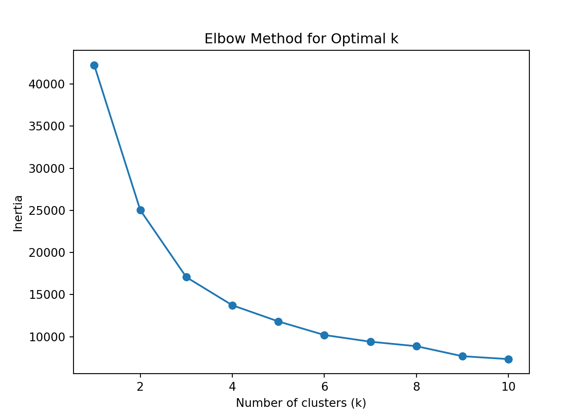
Verify using the silhouette score (optional but recommended)
# Evaluate silhouette scores for k=3 to k=6
silhouette_scores = {}
for k in range(3, 7):
kmeans = KMeans(n_clusters=k, random_state=2025)
labels = kmeans.fit_predict(X_scaled)
score = silhouette_score(X_scaled, labels)
silhouette_scores[k] = score
silhouette_scores{3: 0.3593789986001599, 4: 0.3426379222066999, 5: 0.3356490479339938, 6: 0.3289658614850517}Fit K-means and assign cluster labels to each customer
# Let's assume the elbow suggested k=3
optimal_k = 3
kmeans = KMeans(n_clusters=optimal_k, random_state=2025)
telco_churn['Cluster'] = kmeans.fit_predict(X_scaled)Visualize customer segments using a 2D plot
plt.clf()
# Visualize clusters in 2D space (using tenure and MonthlyCharges)
sns.scatterplot(data=telco_churn, x='tenure', y='AvgServiceUsageScore', hue='Cluster', palette='viridis')
plt.title('Customer Segments via K-Means')
plt.show();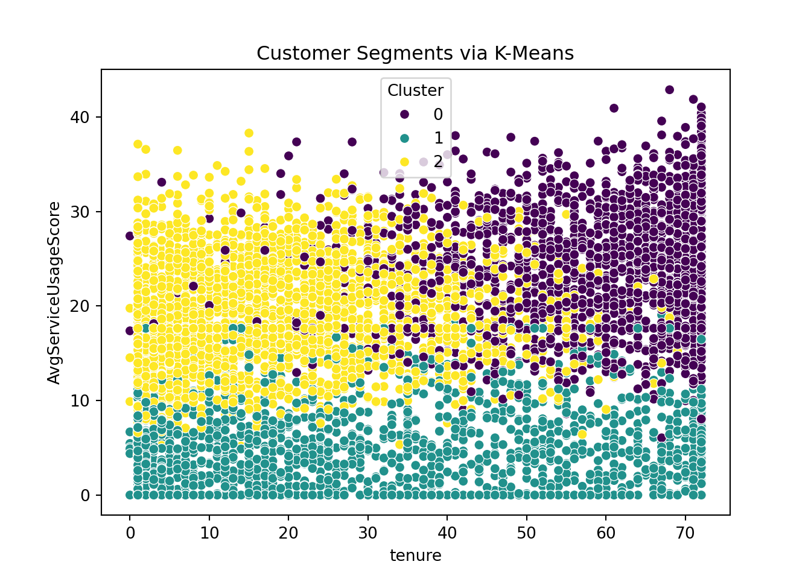
Exercise #5: Exploring K-Means Clustering for Customer Segmentation
Apply K-Means clustering to segment customers
# Select relevant features
features_cluster = ['Income', 'TotalSpent', 'TotalChildren']
X_cluster = marketing_campaign[features_cluster]
# Standardize features
scaler = StandardScaler()
X_cluster_scaled = scaler.fit_transform(X_cluster)Determine the optimal number of clusters using the Elbow Method
inertia = []
k_range = range(1, 11)
for k in k_range:
kmeans = KMeans(n_clusters=k, random_state=2025)
kmeans.fit(X_cluster_scaled)
inertia.append(kmeans.inertia_)KMeans(n_clusters=10, random_state=2025)In a Jupyter environment, please rerun this cell to show the HTML representation or trust the notebook.
On GitHub, the HTML representation is unable to render, please try loading this page with nbviewer.org.
KMeans(n_clusters=10, random_state=2025)
plt.clf()
plt.plot(k_range, inertia, marker='o')
plt.xlabel('Number of clusters (k)')
plt.ylabel('Inertia')
plt.title('Elbow Method for Optimal k')
plt.show();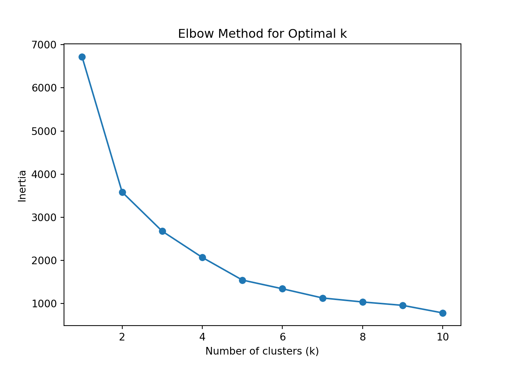
Verify using the silhouette score (optional but recommended)
silhouette_scores = {}
for k in range(3, 7):
kmeans = KMeans(n_clusters=k, random_state=2025)
labels = kmeans.fit_predict(X_cluster_scaled)
score = silhouette_score(X_cluster_scaled, labels)
silhouette_scores[k] = score
silhouette_scores{3: 0.4347244975121541, 4: 0.4383664875378411, 5: 0.4433585654198512, 6: 0.4291066754481293}Fit K-means and assign cluster labels to each customer
# Assume optimal k is 5 (can be adjusted based on elbow or silhouette)
optimal_k = 5
kmeans_final = KMeans(n_clusters=optimal_k, random_state=2025)
marketing_campaign['Cluster'] = kmeans_final.fit_predict(X_cluster_scaled)Visualize customer segments using a 2D plot
import matplotlib.ticker as ticker
plt.clf()
sns.scatterplot(data=marketing_campaign, x='TotalChildren', y='TotalSpent', hue='Cluster', palette='viridis')
plt.title('Customer Segments via K-Means Clustering')
# Set x-axis to integer ticks only
plt.gca().xaxis.set_major_locator(ticker.MultipleLocator(1))
plt.show();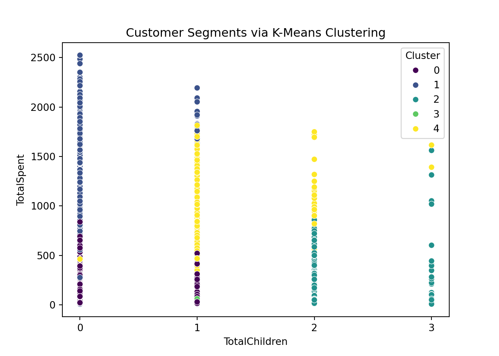
Walkthrough #6: Market Basket Analysis with Apriori Algorithm
Prepare transactional data (services as items)
# Selecting binary service columns to act like "products"
service_cols = [
'OnlineSecurity', 'OnlineBackup', 'DeviceProtection',
'TechSupport', 'StreamingTV', 'StreamingMovies', 'PhoneService'
]
# Convert service columns to boolean (preference of apriori() function)
telco_churn_basket = telco_churn[service_cols].astype(bool)
telco_churn_basket OnlineSecurity OnlineBackup DeviceProtection TechSupport \
0 False True False False
1 True False True False
2 True True False False
3 True False True True
4 False False False False
... ... ... ... ...
7038 True False True True
7039 False True True False
7040 True False False False
7041 False False False False
7042 True False True True
StreamingTV StreamingMovies PhoneService
0 False False False
1 False False True
2 False False True
3 False False False
4 False False True
... ... ... ...
7038 True True True
7039 True True True
7040 False False False
7041 False False True
7042 True True True
[7043 rows x 7 columns]Apply the Apriori algorithm to identify frequent itemsets
frequent_itemsets = apriori(telco_churn_basket, min_support=0.2, use_colnames=True)
frequent_itemsets support itemsets
0 0.286668 (OnlineSecurity)
1 0.344881 (OnlineBackup)
2 0.343888 (DeviceProtection)
3 0.290217 (TechSupport)
4 0.384353 (StreamingTV)
5 0.387903 (StreamingMovies)
6 0.903166 (PhoneService)
7 0.246486 (PhoneService, OnlineSecurity)
8 0.304132 (OnlineBackup, PhoneService)
9 0.222490 (StreamingTV, DeviceProtection)
10 0.226466 (DeviceProtection, StreamingMovies)
11 0.300582 (DeviceProtection, PhoneService)
12 0.249184 (TechSupport, PhoneService)
13 0.275451 (StreamingTV, StreamingMovies)
14 0.343888 (StreamingTV, PhoneService)
15 0.345591 (PhoneService, StreamingMovies)
16 0.200057 (DeviceProtection, PhoneService, StreamingMovies)
17 0.247054 (StreamingTV, PhoneService, StreamingMovies)Generate association rules from frequent itemsets
rules = association_rules(frequent_itemsets, metric="confidence", min_threshold=0.6)
rules = rules[['antecedents', 'consequents', 'support', 'confidence', 'lift']]
rules antecedents consequents \
0 (OnlineSecurity) (PhoneService)
1 (OnlineBackup) (PhoneService)
2 (DeviceProtection) (StreamingTV)
3 (DeviceProtection) (StreamingMovies)
4 (DeviceProtection) (PhoneService)
5 (TechSupport) (PhoneService)
6 (StreamingTV) (StreamingMovies)
7 (StreamingMovies) (StreamingTV)
8 (StreamingTV) (PhoneService)
9 (StreamingMovies) (PhoneService)
10 (DeviceProtection, PhoneService) (StreamingMovies)
11 (DeviceProtection, StreamingMovies) (PhoneService)
12 (StreamingTV, PhoneService) (StreamingMovies)
13 (StreamingTV, StreamingMovies) (PhoneService)
14 (PhoneService, StreamingMovies) (StreamingTV)
15 (StreamingTV) (PhoneService, StreamingMovies)
16 (StreamingMovies) (StreamingTV, PhoneService)
support confidence lift
0 0.246486 0.859832 0.952019
1 0.304132 0.881844 0.976392
2 0.222490 0.646986 1.683311
3 0.226466 0.658547 1.697710
4 0.300582 0.874071 0.967785
5 0.249184 0.858611 0.950667
6 0.275451 0.716661 1.847526
7 0.275451 0.710102 1.847526
8 0.343888 0.894717 0.990645
9 0.345591 0.890922 0.986443
10 0.200057 0.665564 1.715802
11 0.200057 0.883386 0.978099
12 0.247054 0.718415 1.852047
13 0.247054 0.896907 0.993070
14 0.247054 0.714873 1.859936
15 0.247054 0.642778 1.859936
16 0.247054 0.636896 1.852047 Interpret insights
🔵 Key Metrics
Support:
Fraction of all customers who have this combination of services.
Example: 0.275 means 27.5% of customers bought that combination.
Confidence:
Given the antecedent, how often does the consequent also occur?
Example: Confidence of 0.71 means 71% of customers with the antecedent also have the consequent.
Lift:
Measures how much more likely the consequent is given the antecedent compared to random chance.
Lift > 1 → Positive association.
Lift = 1 → Independent.
Lift < 1 → Negative association.
🧩 Interpretation of Key Rules. Rule 6. If customers have StreamingTV, they also likely have StreamingMovies
Confidence = 0.71. 71% of customers who subscribe to StreamingTV also have StreamingMovies.
Lift = 1.84. This is 84% more likely than random → strong association.
📌 Business insight:
These services are good cross-sell opportunities. A bundled “Entertainment Pack” could increase uptake.
Rule 2. If customers have DeviceProtection, they also likely have StreamingTV
Confidence = 0.65. 65% of DeviceProtection users also subscribe to StreamingTV.
Lift = 1.68. This is a significant positive relationship, suggesting that people buying protection plans may also value entertainment services.
📌 Business insight:
Consider cross-promoting entertainment bundles during device protection sales.
Rule 10. If customers have DeviceProtection + PhoneService, they likely also have StreamingMovies
Confidence = 0.67. 67% of these bundled customers also purchase StreamingMovies.
Lift = 1.71. Shows a strong cross-sell relationship.
📌 Business insight:
Customers with both DeviceProtection and PhoneService are strong candidates for targeted movie streaming promotions.
General pattern. StreamingTV ↔︎ StreamingMovies repeatedly show strong relationships with lift > 1.8.
PhoneService often appears as a base product with high confidence but lower lift (~0.9) — this is expected since most customers (90%) already have PhoneService.
🔔 Summary.
Look for high lift AND high confidence.
Focus marketing on bundles like:
StreamingTV + StreamingMovies packages.
Upselling StreamingMovies to customers with DeviceProtection + PhoneService.
Exercise #6: Market Basket Analysis with Apriori Algorithm
Prepare transactional data (product categories as items)
# Select binary columns representing product purchases
product_cols = [
'MntWines', 'MntFruits', 'MntMeatProducts',
'MntFishProducts', 'MntSweetProducts', 'MntGoldProds'
]
# Convert product columns to binary: 1 if any amount was spent, else 0
basket = marketing_campaign[product_cols].applymap(lambda x: 1 if x > 0 else 0)
# Rename columns for cleaner output
basket.columns = [
'Wines', 'Fruits', 'Meat', 'Fish', 'Sweets', 'Gold'
]
basket = basket.astype(bool)
basket.head() Wines Fruits Meat Fish Sweets Gold
0 True True True True True True
1 True True True True True True
2 True True True True True True
3 True True True True True True
4 True True True True True TrueApply the Apriori algorithm to identify frequent itemsets
frequent_itemsets = apriori(basket, min_support=0.2, use_colnames=True)
frequent_itemsets.sort_values(by='support', ascending=False) support itemsets
2 0.999554 (Meat)
0 0.994196 (Wines)
7 0.994196 (Wines, Meat)
5 0.972768 (Gold)
17 0.972321 (Gold, Meat)
.. ... ...
44 0.656696 (Fruits, Sweets, Fish, Wines)
54 0.650000 (Fruits, Sweets, Fish, Gold)
61 0.650000 (Fruits, Fish, Gold, Meat, Sweets)
59 0.646875 (Fruits, Fish, Gold, Wines, Sweets)
62 0.646875 (Fruits, Fish, Gold, Wines, Meat, Sweets)
[63 rows x 2 columns]Generate association rules from frequent itemsets
rules = association_rules(frequent_itemsets, metric="confidence", min_threshold=0.6)
rules = rules[['antecedents', 'consequents', 'support', 'confidence', 'lift']]
rules = rules.sort_values(by='lift', ascending=False)
rules.reset_index(drop=True, inplace=True)
rules antecedents consequents support confidence \
0 (Sweets, Gold, Wines) (Fruits, Fish) 0.646875 0.816338
1 (Sweets, Gold, Wines) (Fruits, Fish, Meat) 0.646875 0.816338
2 (Fruits, Fish) (Sweets, Gold, Wines) 0.646875 0.879248
3 (Sweets, Gold, Wines, Meat) (Fruits, Fish) 0.646875 0.816338
4 (Fruits, Fish, Meat) (Sweets, Gold, Wines) 0.646875 0.879248
.. ... ... ... ...
597 (Wines, Meat) (Sweets, Fish) 0.727679 0.731926
598 (Wines, Meat) (Sweets, Gold, Fish) 0.714286 0.718455
599 (Sweets, Fish, Gold) (Wines) 0.714286 0.992556
600 (Wines) (Sweets, Fish, Gold) 0.714286 0.718455
601 (Sweets, Gold, Fish) (Wines, Meat) 0.714286 0.992556
lift
0 1.109586
1 1.109586
2 1.109586
3 1.109586
4 1.109586
.. ...
597 0.998487
598 0.998350
599 0.998350
600 0.998350
601 0.998350
[602 rows x 5 columns]Interpret insights
Here are three example rules from the output:
# Show top 3 rules for manual interpretation
rules.head(3) antecedents consequents support confidence \
0 (Sweets, Gold, Wines) (Fruits, Fish) 0.646875 0.816338
1 (Sweets, Gold, Wines) (Fruits, Fish, Meat) 0.646875 0.816338
2 (Fruits, Fish) (Sweets, Gold, Wines) 0.646875 0.879248
lift
0 1.109586
1 1.109586
2 1.109586 🔍 Key Metrics Recap:
- Support: How often the itemset appears in the dataset
- Confidence: Likelihood that the consequent is purchased when the antecedent is
- Lift: Strength of the association
- Lift > 1 → Positive association
- Lift = 1 → No association (independent)
- Lift < 1 → Negative association
- Lift > 1 → Positive association
🧩 Example Interpretations Based on Top 3 Rules:
Rule 1
If customers purchase Wines, Meat, Sweets, and Gold, they also likely purchase Fish and Fruits
- Confidence = 0.82 → 82% of customers who buy Wines, Meat, Sweets, and Gold also buy Fish and Fruits
- Lift = 1.11 → Slightly stronger than random chance (11% more likely)
📌 Business Insight: Customers who spend across luxury (Gold), indulgent (Sweets), and staple (Meat, Wine) categories are good targets for bundled offers that include Fish and Fruits as healthy complements.
Rule 2
If customers purchase Wines, Sweets, and Gold, they also likely purchase Fish, Meat, and Fruits
- Confidence = 0.82
- Lift = 1.11
📌 Business Insight: This pattern suggests customers with a taste for fine items (Gold + Wines + Sweets) are highly likely to also buy a variety of essentials (Fish, Meat, Fruits). Consider creating gourmet bundles featuring these combinations.
Rule 3
If customers purchase Fish, Meat, and Fruits, they also likely purchase Wines, Sweets, and Gold
- Confidence = 0.88 → Very strong rule
- Lift = 1.11
📌 Business Insight: Customers who stock up on protein and fresh produce often also spend on indulgent and luxury products. Upsell Wines, Sweets, and Gold items to shoppers purchasing staples — strong potential for increasing average order value.
🔔 Summary:
Focus on rules with: - High confidence: Indicates consistent purchasing behavior
- Lift > 1: Indicates a real association beyond chance
💡 Marketing Strategy Ideas:
- Target luxury buyers of Wines + Sweets + Gold with healthy add-ons like Fish + Fruits
- Promote “Gourmet Essentials Packs” that include Fish, Meat, Fruits, and Wine
- Use Rule 3 to upsell luxury products to customers starting with staple categories
Module 4: Implementing and Evaluating ML Models
Walkthrough #7: Exploring Cross-Validation for Model Evaluation
Split data into training and validation sets
# Features and target
X = telco_churn[['AvgServiceUsageScore', 'tenure', 'MonthlyCharges']]
y = telco_churn['Churn']
# Scale the features since logistic regression is a linear model
scaler = StandardScaler()
X_scaled = scaler.fit_transform(X)
# Split into train and test sets (80% train, 20% test)
X_train, X_test, y_train, y_test = train_test_split(X_scaled, y, test_size=0.2, random_state=2025)Train a classification model using logistic regression
# Initialize logistic regression model
logreg = LogisticRegression(max_iter=1000, solver='liblinear')Apply k-fold cross-validation to evaluate model performance
# Cross-validate with multiple metrics
cv_results = cross_validate(
logreg,
X_train,
y_train,
cv=5,
scoring=['accuracy', 'precision', 'recall', 'f1'],
return_train_score=True
)Compare metrics across folds
# Average performance across folds
for metric in ['test_accuracy', 'test_precision', 'test_recall', 'test_f1']:
print(f"{metric.split('_')[1].capitalize()}: {cv_results[metric].mean():.3f} ± {cv_results[metric].std():.3f}")Accuracy: 0.782 ± 0.008
Precision: 0.632 ± 0.021
Recall: 0.447 ± 0.020
F1: 0.524 ± 0.018📝 Interpretation Accuracy → Overall correctness of predictions
Precision → How many predicted churns were actual churns
Recall → How many churns were correctly identified
F1-Score → Balances precision & recall
Cross-validation ensures that your model generalizes better to unseen data by reducing the risk of overfitting on a single split.
Exercise #7: Exploring Cross-Validation for Model Evaluation
Split data into training and validation sets
# Features and target
X_m = marketing_campaign[['Income', 'TotalSpent', 'TotalChildren']]
y_m = marketing_campaign['Response']
# Scale features
scaler = StandardScaler()
X_m_scaled = scaler.fit_transform(X_m)
# Train-test split
X_m_train, X_m_test, y_m_train, y_m_test = train_test_split(
X_m_scaled, y_m, test_size=0.2, random_state=2025
)Train a classification model using logistic regression
# Initialize logistic regression model
logreg_m = LogisticRegression(max_iter=1000, solver='liblinear')Apply k-fold cross-validation to evaluate model performance
# 5-fold cross-validation with multiple metrics
cv_results_m = cross_validate(
logreg_m,
X_m_train,
y_m_train,
cv=5,
scoring=['accuracy', 'precision', 'recall', 'f1'],
return_train_score=True
)/Users/chesterismay/.virtualenvs/r-reticulate/lib/python3.9/site-packages/sklearn/metrics/_classification.py:1565: UndefinedMetricWarning: Precision is ill-defined and being set to 0.0 due to no predicted samples. Use `zero_division` parameter to control this behavior.
_warn_prf(average, modifier, f"{metric.capitalize()} is", len(result))Compare metrics across folds
# Average performance across folds
for metric in ['test_accuracy', 'test_precision', 'test_recall', 'test_f1']:
print(f"{metric.split('_')[1].capitalize()}: {cv_results_m[metric].mean():.3f} ± {cv_results_m[metric].std():.3f}")Accuracy: 0.843 ± 0.010
Precision: 0.443 ± 0.364
Recall: 0.032 ± 0.029
F1: 0.060 ± 0.053📝 Interpretation Accuracy → Overall correctness of predictions
Precision → How many predicted responders were actual responders
Recall → How many actual responders were correctly identified
F1-Score → Harmonic mean of precision and recall
Walkthrough #8: Hyperparameter Tuning with Grid Search
Train a Random Forest classifier
# Features and target
X = telco_churn[['AvgServiceUsageScore', 'tenure', 'MonthlyCharges']]
y = telco_churn['Churn']
# Initialize Random Forest
rf = RandomForestClassifier(random_state=2025)Apply grid search to find optimal hyperparameters
# Define the hyperparameter grid
param_grid = {
'n_estimators': [100, 200],
'max_depth': [4, 8],
'min_samples_split': [2, 5],
'min_samples_leaf': [1, 2]
}
# GridSearchCV setup
grid_search = GridSearchCV(
estimator=rf,
param_grid=param_grid,
cv=5,
scoring='recall',
n_jobs=-1,
verbose=1
)
# Run grid search
grid_search.fit(X, y)GridSearchCV(cv=5, estimator=RandomForestClassifier(random_state=2025),
n_jobs=-1,
param_grid={'max_depth': [4, 8], 'min_samples_leaf': [1, 2],
'min_samples_split': [2, 5],
'n_estimators': [100, 200]},
scoring='recall', verbose=1)In a Jupyter environment, please rerun this cell to show the HTML representation or trust the notebook. On GitHub, the HTML representation is unable to render, please try loading this page with nbviewer.org.
GridSearchCV(cv=5, estimator=RandomForestClassifier(random_state=2025),
n_jobs=-1,
param_grid={'max_depth': [4, 8], 'min_samples_leaf': [1, 2],
'min_samples_split': [2, 5],
'n_estimators': [100, 200]},
scoring='recall', verbose=1)RandomForestClassifier(max_depth=8, min_samples_leaf=2, min_samples_split=5,
n_estimators=200, random_state=2025)RandomForestClassifier(max_depth=8, min_samples_leaf=2, min_samples_split=5,
n_estimators=200, random_state=2025)Evaluate model improvement using accuracy and recall
# Predict using the best model
best_rf = grid_search.best_estimator_
y_pred = best_rf.predict(X)
# Evaluate
print(f"Best Accuracy: {accuracy_score(y, y_pred):.3f}")Best Accuracy: 0.817print(f"Best Recall: {recall_score(y, y_pred):.3f}")Best Recall: 0.478Interpret the best hyperparameter combination
print("Best Parameters Found:", grid_search.best_params_)Best Parameters Found: {'max_depth': 8, 'min_samples_leaf': 2, 'min_samples_split': 5, 'n_estimators': 200}Exercise #8: Hyperparameter Tuning with Grid Search
Train a Random Forest classifier
# Features and target
X_m = marketing_campaign[['Income', 'TotalSpent', 'TotalChildren']]
y_m = marketing_campaign['Response']
# Initialize Random Forest
rf_m = RandomForestClassifier(random_state=2025)Apply grid search to find optimal hyperparameters
# Define the hyperparameter grid
param_grid_m = {
'n_estimators': [100, 200],
'max_depth': [4, 8],
'min_samples_split': [2, 5],
'min_samples_leaf': [1, 2]
}
# GridSearchCV setup
grid_search_m = GridSearchCV(
estimator=rf_m,
param_grid=param_grid_m,
cv=5,
scoring='recall',
n_jobs=-1,
verbose=1
)
# Run grid search
grid_search_m.fit(X_m, y_m)GridSearchCV(cv=5, estimator=RandomForestClassifier(random_state=2025),
n_jobs=-1,
param_grid={'max_depth': [4, 8], 'min_samples_leaf': [1, 2],
'min_samples_split': [2, 5],
'n_estimators': [100, 200]},
scoring='recall', verbose=1)In a Jupyter environment, please rerun this cell to show the HTML representation or trust the notebook. On GitHub, the HTML representation is unable to render, please try loading this page with nbviewer.org.
GridSearchCV(cv=5, estimator=RandomForestClassifier(random_state=2025),
n_jobs=-1,
param_grid={'max_depth': [4, 8], 'min_samples_leaf': [1, 2],
'min_samples_split': [2, 5],
'n_estimators': [100, 200]},
scoring='recall', verbose=1)RandomForestClassifier(max_depth=8, random_state=2025)
RandomForestClassifier(max_depth=8, random_state=2025)
Evaluate model improvement using accuracy and recall
# Predict using the best model
best_rf_m = grid_search_m.best_estimator_
y_m_pred = best_rf_m.predict(X_m)
# Evaluate
print(f"Best Accuracy: {accuracy_score(y_m, y_m_pred):.3f}")Best Accuracy: 0.890print(f"Best Recall: {recall_score(y_m, y_m_pred):.3f}")Best Recall: 0.287Interpret the best hyperparameter combination
print("Best Parameters Found:", grid_search_m.best_params_)Best Parameters Found: {'max_depth': 8, 'min_samples_leaf': 1, 'min_samples_split': 2, 'n_estimators': 100}